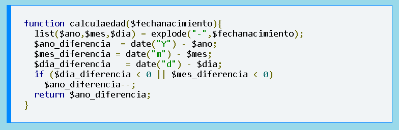

RAZÓN 6: Da resultados (return)
Con esta sentencia se da fin a la ejecución de una funcion y se regresa al programa principal. Además de esto tras la ejecución de dicha función esto nos arroja un resultado para ser utilizado por el sistema principal.
